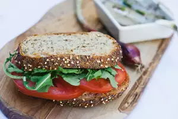

Quick Tomato Sandwich

Description
You may not really need a recipe for a tomato sandwich, but sometimes varying it can be nice, especially if you tend to get stuck in a habit as the summer progresses. This version, based on pan con tomate, involves rubbing the guts of a ripe tomato all over garlicky toasted bread. More tomato slices are added on top, along with slivers of onion and mayonnaise, and bacon if you'd like. It’s a supremely messy sandwich best munched over the sink, or with plenty of napkins nearby.
Ingredients
- 2 tablespoons ketchup
- 1 tablespoon mayonnaise
- ⅛ teaspoon salt
- ⅛ teaspoon hot pepper sauce
- 4 slices whole wheat bread
- 2 leaves lettuce
- 1 tomato, sliced
Steps
-
Combine ketchup, mayonnaise, salt, and hot pepper sauce in a bowl; mix well.
-
Toast bread in the toaster. Spread ketchup mixture on all 4 slices of toast.
-
Arrange lettuce leaves on a piece of toast, then top with 3 to 4 tomato slices. Cover with another piece of toast. Repeat this step to make second sandwich.
Back